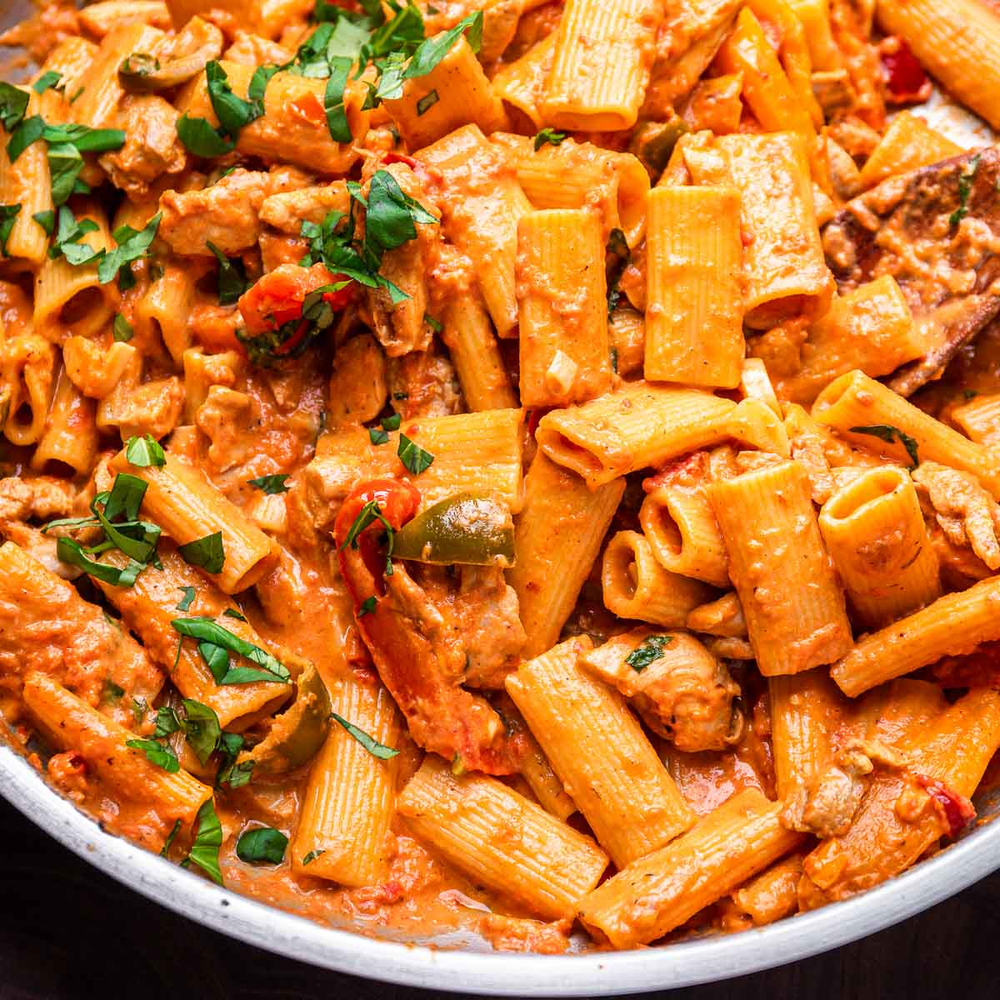

Chicken Riggies

Chicken Riggies Recipe
Chicken riggies are a classic Utica, NY food. Enjoy a little piece of Upstate New York at home with this simple recipe.
Ingredients
- lb rigatoni
- 1lb of Chicken breast
- Olive oil
- 2 Red Bell Peppers
- 1 yellow onion
- 3 cloves of garlic, minced.
- 1/2 cup of hot cherry peppers
- 28oz of crushed tomato sauce
- 1 cup heavy cream
Steps
- Boil the rigatoni in a large pot until it is al dente. Drain the water from the pasta.
- Add the olive oil to a skillet on medium-high heat. Add the chicken to the skillet and cook for around 6-7 minutes or until the chicken is slightly golden. Transfer the chicken to a seperate bowl.
- Add the red bell peppers, yellow onion, and garlic to the skillet. Cook until the vegetables soften.
- Add the hot cherry peppers and crushed tomatoes, heat until it simmers and then reduce to medium heat. Cook a few more minutes until the sauce thickens.
- Add the chicken and the heavy cream. Cook until the chicken is fully cooked through and is no longer pink on the inside.
- Mix in the pasta and enjoy!